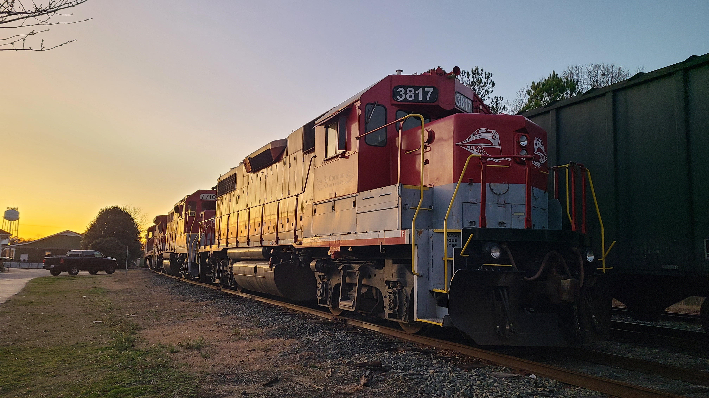

- Date: 12/18/2022
- Location: Raleigh, NC
- Locomotives: GE B39-8E, EMD GP38-2
- Notes: Power for the brand new Raleigh and Fayetteville Railroad

- Date: 2/18/2023
- Location: Fuquay-Varina, NC
- Locomotives: EMD GP38-2, EMD GP38-2, GE B39-8E
- Notes: The RFCC's trio of power rests over the weekend